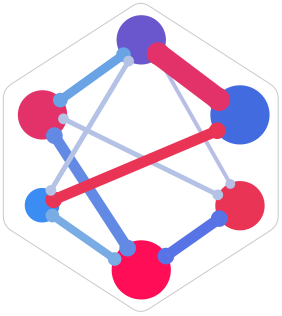

Game constructions
What counts as a player, what a coalition changes, and how its score is computed.
Explore the games and their shapiq implementations
The game inventory appears when the report loads.

shapiq/ benchmark Explore the results ↗Behind the leaderboard
We compare Shapley estimators on games built from real datasets and models. Each estimator gets the same query budget; we compare its answer with exact ground truth.
A game assigns a score to each subset of players, called a coalition. Shapley values divide the credit among players. Shapley interaction indices describe how players contribute together.
Examples used to predict a person’s income category.
A predictor fitted to training examples.
Keep selected features of a held-out person; fill in the rest from background data.
Players are features. A coalition’s score is the averaged predicted probability.
The construction determines the question. Local explanations ask which features explain one prediction. Feature-selection games ask which features help a model learn. Data-valuation games ask which training examples help.
Other games use image regions, text tokens, groups or ensemble members as players. Some need no fitted model. d always means the number of players.
We combine shapiq’s datasets, models and game constructions wherever they are compatible. A classification model needs a classification task; a feature game needs enough usable features; every game needs a supported exact answer.
Loading the published games, datasets and models…
These tables describe published results. Planned additions are listed in the rollout plan.
What counts as a player, what a coalition changes, and how its score is computed.
The game inventory appears when the report loads.
The source data, prediction task, selected features and numbers of examples used.
The dataset inventory appears when the report loads.
Models such as random forests generate the game’s scores. The Shapley estimators on the leaderboard estimate credit for those scores.
The model inventory appears when the report loads.
Each row describes a configuration, grouping its repeated game instances and explanation targets.
A general game with d players has 2d coalitions. We can evaluate every coalition and calculate exact attributions from that table, but the cost grows quickly.
coalitions
We save every coalition’s payoff. Estimators query this fixed table, so expensive model evaluations do not have to be repeated.
Some tree, nearest-neighbor and product-kernel games have specialized exact solvers. We check each solver against full enumeration on small games before using it at larger sizes.
We freeze the sampled realization and compute ground truth for that game. For example, a fixed background sample defines the payoff table; its exact answer may differ from the answer using infinitely many background samples. All estimators see the same frozen game.
More players or deeper trees do not guarantee a harder game. We also measure how much of a game’s variation comes from individual players, pairs, and larger groups acting together.
The Boolean Fourier spectrum measures this structure. Order 1 captures individual effects; order 2 captures pairs; order 4+ captures effects involving at least four players. The reported percentages divide the game’s nonconstant variation among these orders.
We compute this from saved payoff tables, with no extra model queries. The game inventory reports the range of order-4+ energy for each construction. Larger structured games without full payoff tables do not have these diagnostics.
Measured, not yet balanced. We record these diagnostics, but do not currently select or weight games by their spectrum. A broad dataset catalog alone does not establish broad interaction complexity. Selecting a representative spread of spectra remains a future step.
Coalitions have equal weight in this diagnostic. It describes the frozen game, including any frozen sampling noise, and differs from a Shapley interaction index. It also differs from predictive model quality, which we check separately against held-out baselines where recorded. A high-order spectrum alone does not establish that a game is realistic or useful.
We compare estimators on the same games and budgets. Shapley values and each Shapley interaction index have separate rankings. Each configuration uses four game instances, with one estimator evaluation per instance and budget.
0.5 · 1 · 2 · 4 · 8 · 16 · 32 · 64 · 128
A budget of 8d allows 96 queries for 12 players. A query evaluates one coalition, including repeated queries. Plots show the allowance; an estimator may use less.0Exact answer
1Same error as predicting all zeros
> 1Worse than predicting all zeros
Normalization lets us compare games with different payoff scales. We exclude games with zero or near-zero attribution signal, for which this ratio would be unreliable.
The typical error, with balancing weights. Occasional extreme errors have less influence.
The weighted average error. Large mistakes have more influence, revealing instability the median may hide.
A relative ranking from paired comparisons on the same game and budget. Higher means more frequent wins, not necessarily smaller errors on average.
Check how many supported runs finished. Missing results never count as zero error. Incomplete methods appear lower by default because their scores may describe an easier subset. Unsupported targets and insufficient budgets are reported separately.
CPU estimator runs use pinned, single-thread workers on matching AMD EPYC 9754 nodes. Concurrent timings are labeled diagnostic. Estimated uncached time adds recorded payoff costs to measured estimator work; it is not a fresh end-to-end timing. GPU-generated payoff costs retain their own hardware identity. Batch-amortized charges can underestimate small-batch latency; use them as estimates, not measured end-to-end speed.
The history chart places today’s scores at each estimator’s publication date. It uses complete coverage and compares methods on the current benchmark, rather than reconstructing past results.
Balancing. Families receive equal weight, then configurations within families, instances, budgets and estimator seeds within their groups. Partial scores renormalize the successful observations. A weighted median exactly at half the weight averages its two neighbors.
Normalization. We score the selected attribution coordinates, excluding the empty-coalition baseline. The signal filter requires RMS attribution to be at least 10−6 times the payoff standard deviation. For interactions, choose all coefficients, singletons or pairs under Tune filters. Per-order scores also require this signal threshold; analytic games without an enumerated payoff table use full-target RMS instead. The displayed energy share shows how much of the full target belongs to the selected order.
Elo. Runs are paired on game, explanation target, budget and estimator seed. Errors within 1% of the larger nMSE plus 10−12 are ties. We fit a regularized Bradley–Terry model to all comparisons together and center ratings at 1,000. Ties count as half wins. Elo uses overlapping successful runs and fixed published presets; disconnected comparison pools have no rating. “Same cells for all” recomputes Elo on the intersection of successful cells across methods with results. Missing outcomes can affect the available-pairs ranking; the intersection may cover only part of the benchmark.
Uncertainty. Bootstrap draws reuse the same dataset construction seed across related models and recipes, preserving shared data splits. Intervals are descriptive, use complete methods, and are withheld when related strata have different seed sets. Four game instances with one estimator run each do not isolate estimator seed variability.
Core and control games. Headline scores exclude games marked as controls by model validation and game-quality checks. “Include control games” keeps their measured results available for diagnosis. This is separate from the negligible-truth signal filter. Clustering games whose scores are dominated by near-zero within-cluster variance are also controls: their apparent interaction complexity can come from numerical spikes. We preserve their measured results and record the additional quality check.
Larger structured games. These enter the default comparison after native exact-solver and signal checks. Profiled tree and kernel predictors also pass model-validation checks; nearest-neighbor utility games do not use that predictor-quality gate. Without full payoff tables, these games have no Fourier or table-based complexity checks. Their inclusion does not imply the same diagnostics are available for every game.
Saved games, exact answers and configuration files make the results reproducible. You can evaluate a local estimator on the same games without publishing it to the website.
Configuration details appear when the report loads.
Load an exported report to show its games, datasets, models and settings in the tables above. Older reports may use different player counts or seed settings.